Figure 15.1: Ned Flanders informs us that, well sir, there are two schools of thought on the matter.
What does the word “probability” mean? There are two competing philosophies of probability, and two very different schools of statistics to go with them.
In statistics, the dominant tradition has been to think of probability in terms of “frequency”. What’s the probability a coin will land heads? That just depends on how often it lands heads—the frequency of heads.
If a coin lands heads half the time, then the probability of heads on any given toss is \(1/2\). If it lands heads \(9/10\) of the time, then the probability of heads is \(9/10\).
This is probably the most common way of understanding “probability”. You may even be thinking to yourself, isn’t it obvious that’s what probability is about?
But many statements about probability don’t fit the frequency mold, not very well at least.
Consider the statement, “the probability the dinosaurs were wiped out by a meteor is \(90\%\).” Does this mean \(90\%\) of the times dinosaurs existed on earth, they were wiped out? They only existed once! This probability is about an event that doesn’t repeat. So there’s no frequency with which it happens.
Here’s another example: “humans are probably the main cause of our changing climate.” Does that mean most of the time, when climate change happens, humans are the cause? Humans haven’t even been around for most of the climate changes in Earth’s history. So again: this doesn’t seem to be a statement about the frequency with which humans cause global warming.
These statements appear instead to be about what beliefs are supported by the evidence. When someone says it’s \(90\%\) likely the dinosaurs were wiped out by a meteor, they mean the evidence warrants being \(90\%\) confident that’s what happened.6 What evidence? People don’t always say what evidence they’re relying on. But sometimes they do: fossil records and geological traces, for example. Similarly, when someone says humans are probably the main cause of climate change, they mean that the evidence warrants being more than \(50\%\) confident it’s true.
So, some probability statements appear to be about belief, not frequency. If a proposition has high probability, that means the evidence warrants strong belief in it. If a proposition has low probability, the evidence only warrants low confidence.
Which kind of probability are scientists using when they use probability theory? Is science about the frequency with which certain events happen? Or is it about what beliefs are warranted by the evidence?
There is a deep divide among scientists on this issue, especially statisticians.
The frequentists think that science deals in the first kind of probability, frequency. This interpretation has the appeal of being conrete and objective, since we can observe and count how often something happens. And science is all about observation and objectivity, right?
The Bayesians think instead that science deals in the second kind of probability, belief-type probability. Science is supposed to tell us what to believe given our evidence, after all. So it has to go beyond just the frequencies we’ve observed, and say what beliefs those observations support.
Let’s consider the strengths and weaknesses of each approach.
According to frequentists, probability is all about how often something happens. But what if it only ever has one opportunity to happen?
For example, suppose we take an ordinary coin fresh from the mint, and we flip it once. It lands heads. Then we melt it down and destroy it. Was the probability of heads on that flip \(1\)? The coin landed heads \(1\) out of \(1\) times, so isn’t that what the frequency view implies? And yet, common sense says the probability of heads was \(1/2\), not \(1\). It was an ordinary coin, it could have landed either way.
Well, we can distinguish actual frequency from hypothetical frequency.
Actual frequency is the number of times the coin actually lands heads, divided by the total number of flips. If there’s only one flip and it’s a heads, then the actual frequency is \(1/1\), which is just \(1\). If there’s ten flips and four are heads, then the actual frequency is \(4/10\).
But hypothetical frequency is the number of times the coin would land heads if you flipped it over and over for a long time, divided by the total number of hypothetical flips. If we flipped the coin a hundred times for example, it would probably land heads about half the time, like in Figure 15.2.
Figure 15.2: The frequency of heads over the course of \(100\) coin flips. This particular sequence of heads and tails was generated by a computer simulation.
Presumably, it’s the hypothetical frequency that is the real probability of heads, according to frequentists. So doesn’t that solve our problem with one-off events? Even if a coin is only ever flipped once, what matters is how it would have landed if we’d flipped it many times.
Serious problems beset the hypothetical frequency view too, however.
 Figure 15.3: Three fair coins flipped \(100\) times each, yielding three different frequencies
The first problem is that it makes our definition of “probability” circular, because hypothetical frequency has to be defined in terms of probability. If you flipped the coin over and over, say a hundred times, the most probable outcome is \(50\) heads and \(50\) tails. But other outcomes are perfectly possible, like \(48\) heads, or \(54\) heads. Figure 15.3 shows an example of three fair coins flipped \(100\) times each, yielding three different frequencies.
So the hypothetical frequency of \(1/2\) isn’t what would necessarily happen. It’s only what would probably happen. So what we’re really saying is: “probability” \(=\) most probable hypothetical frequency. But you can’t define a concept in terms of itself!
The second problem is about observability. You can observe actual frequencies, but not hypothetical frequencies. We never actually get to flip a coin more than a few hundred times. So hypothetical frequencies aren’t observable and objective, which undermines the main appeal of the frequency theory.
A third problem has to do with evaluating scientific theories. Part of the point of science is establish which theory is most probable. But theories don’t have frequencies. Recall the example from earlier, about the dinosaurs being made extinct by a meteor. Or take the theory that DNA has a double-helix structure. When we say these theories are highly probable, how would we translate that into a statement about hypothetical frequencies?
A fourth and final problem is that how often an event happens depends on what you compare it to. It depends on the reference class. Consider Tweety, who has wings and is coloured black-and-white. What is the probability that Tweety can fly? Most things with wings can fly. Most things that are black-and-white cannot. Which reference class determines the probability that Tweety can fly? The class of winged things, or the class of black-and-white things?
It’s problems like these that drive many philosophers and scientists away from frequentism, and towards the alternative offered by so-called “Bayesian” probability.
According to Bayesians, probability is ultimately about belief. It’s about how certain you should be that something is true.
For example, \(\p(A)=.9\) means that \(A\) is certain to degree \(0.9\). We can be \(90\%\) confident that \(A\) is true. Whereas \(\p(A)=.3\) means that \(A\) is certain to degree \(0.3\). We can only be \(30\%\) confident \(A\) is true.
Why is this view called “Bayesianism”? Because it uses Bayes’ theorem to explain how science works.
Suppose we have a hypothesis \(H\), and some evidence \(E\). How believable is \(H\) given the evidence \(E\)? Bayes’ Theorem tells us \(\p(H \given E)\) can be calculated: \[ \begin{aligned} \p(H \given E) &= \frac{\p(H)\p(E \given H)}{\p(E)}. \end{aligned} \] And we saw in Section 10.3 how each term on the right corresponds to a rule of good scientific reasoning.
The better a theory fits with the evidence, the more believable it is. And \(\p(E \given H)\) corresponds to how well the hypothesis explains the evidence. Since this term appears in the numerator of Bayes’ theorem, it makes \(\p(H \given E)\) larger.
The more surprising (“novel”) a finding is, the more it supports a theory that explains it. The term \(\p(E)\) corresponds to how surprising the evidence is. And since it appears in the denominator of Bayes’ theorem, surprising evidence makes \(\p(H \given E)\) larger if \(H\) can successfully explain \(E\).
Finally, new evidence has to be weighed against previous evidence and existing considerations. The term \(\p(H)\) corresponds to the prior plausibility of the hypothesis \(H\), and it appears in the numerator of Bayes’ theorem. So the more the hypothesis fits with prior considerations, the larger \(\p(H \given E)\) will be.
So, Bayesians say, we should understand probability as the degree of belief it’s rational to have. The laws of probability, like Bayes’ theorem, show us how to be good, objective scientists, shaping our beliefs according to the evidence.
The main challenge for Bayesians is objectivity. Critics complain that science is objective, but belief is subjective. How so?
First, belief is something personal and mental, so it can’t be quantified objectively. What does it even mean to be \(90\%\) confident that something is true, you might ask? How can you pin a number on a belief?
And second, belief varies from person to person. People from different communities and with different personalities bring different opinions and assumptions to the scientific table. But science is supposed to eliminate personal, subjective elements like opinion and bias.
So frequentists and Bayesians both have their work cut out for them. In the coming chapters we’ll see how they address these issues.